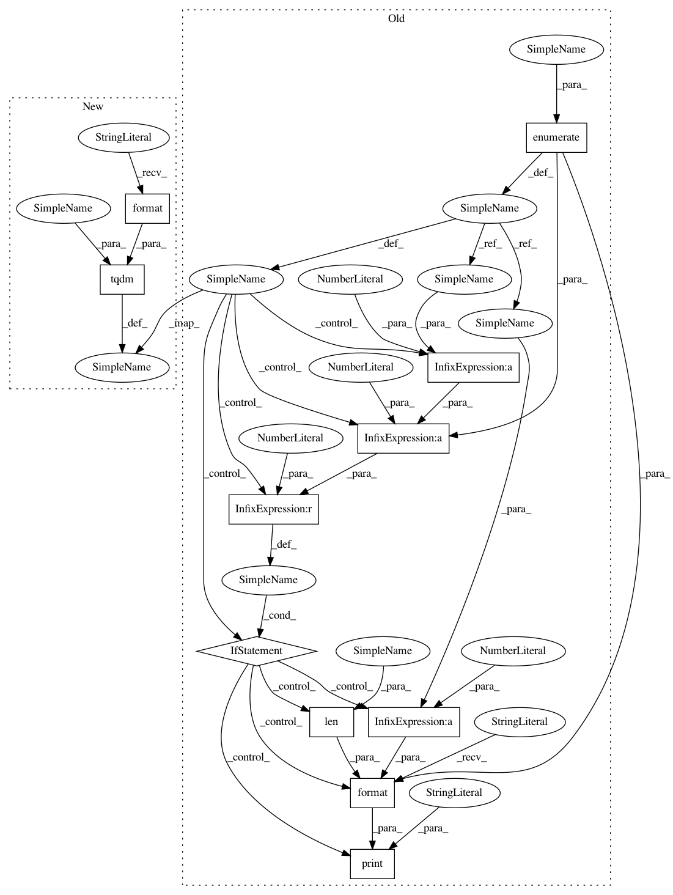

da6fb45ee7a00f5051ec47bf15247045774c3604,mimic3benchmark/scripts/create_in_hospital_mortality.py,,process_partition,#Any#Any#Any#Any#,11
Before Change
xy_pairs = []
patients = list(filter(str.isdigit, os.listdir(os.path.join(args.root_path, partition))))
for (patient_index, patient) in enumerate(patients):
patient_folder = os.path.join(args.root_path, partition, patient)
patient_ts_files = list(filter(lambda x: x.find("timeseries") != -1, os.listdir(patient_folder)))
for ts_filename in patient_ts_files:
with open(os.path.join(patient_folder, ts_filename)) as tsfile:
lb_filename = ts_filename.replace("_timeseries", "")
label_df = pd.read_csv(os.path.join(patient_folder, lb_filename))
// empty label file
if label_df.shape[0] == 0:
continue
mortality = int(label_df.iloc[0]["Mortality"])
los = 24.0 * label_df.iloc[0]["Length of Stay"] // in hours
if pd.isnull(los):
print("\n\t(length of stay is missing)", patient, ts_filename)
continue
if los < n_hours - eps:
continue
ts_lines = tsfile.readlines()
header = ts_lines[0]
ts_lines = ts_lines[1:]
event_times = [float(line.split(",")[0]) for line in ts_lines]
ts_lines = [line for (line, t) in zip(ts_lines, event_times)
if -eps < t < n_hours + eps]
// no measurements in ICU
if len(ts_lines) == 0:
print("\n\t(no events in ICU) ", patient, ts_filename)
continue
output_ts_filename = patient + "_" + ts_filename
with open(os.path.join(output_dir, output_ts_filename), "w") as outfile:
outfile.write(header)
for line in ts_lines:
outfile.write(line)
xy_pairs.append((output_ts_filename, mortality))
if (patient_index + 1) % 100 == 0:
print("processed {} / {} patients".format(patient_index + 1, len(patients)), end="\r")
print("\n", len(xy_pairs))
if partition == "train":
random.shuffle(xy_pairs)
if partition == "test":
After Change
xy_pairs = []
patients = list(filter(str.isdigit, os.listdir(os.path.join(args.root_path, partition))))
for patient in tqdm(patients, desc="Iterating over patients in {}".format(partition)):
patient_folder = os.path.join(args.root_path, partition, patient)
patient_ts_files = list(filter(lambda x: x.find("timeseries") != -1, os.listdir(patient_folder)))
In pattern: SUPERPATTERN
Frequency: 4
Non-data size: 11
Instances
Project Name: YerevaNN/mimic3-benchmarks
Commit Name: da6fb45ee7a00f5051ec47bf15247045774c3604
Time: 2020-03-26
Author: harhro@gmail.com
File Name: mimic3benchmark/scripts/create_in_hospital_mortality.py
Class Name:
Method Name: process_partition
Project Name: YerevaNN/mimic3-benchmarks
Commit Name: da6fb45ee7a00f5051ec47bf15247045774c3604
Time: 2020-03-26
Author: harhro@gmail.com
File Name: mimic3benchmark/scripts/create_length_of_stay.py
Class Name:
Method Name: process_partition
Project Name: YerevaNN/mimic3-benchmarks
Commit Name: da6fb45ee7a00f5051ec47bf15247045774c3604
Time: 2020-03-26
Author: harhro@gmail.com
File Name: mimic3benchmark/scripts/create_decompensation.py
Class Name:
Method Name: process_partition
Project Name: YerevaNN/mimic3-benchmarks
Commit Name: da6fb45ee7a00f5051ec47bf15247045774c3604
Time: 2020-03-26
Author: harhro@gmail.com
File Name: mimic3benchmark/scripts/create_phenotyping.py
Class Name:
Method Name: process_partition